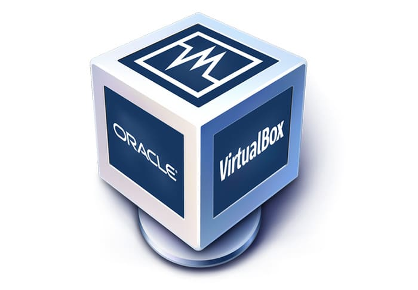

L'installation de OracleVirtual Box, qui est un logiciel de virtualisation nous permet par la suite de configurer notre machine virtuelle en choisissant le système d'exploitation de notre machine, pour notre cas le choix s'est porté sur Debian. La suite est de choisir les caractéristiques de la machine (vue dans la partie introduction).
